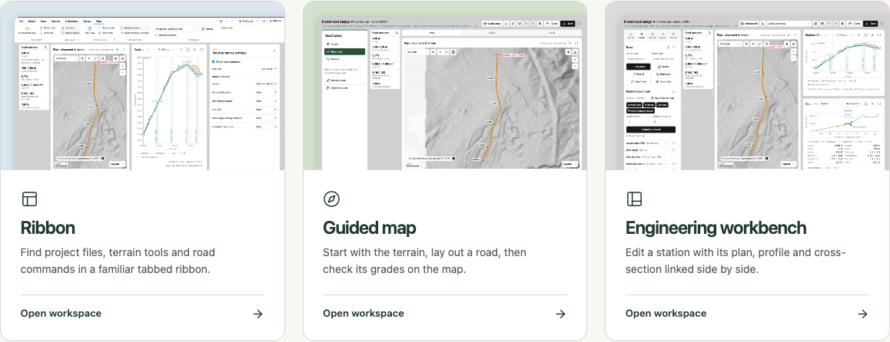
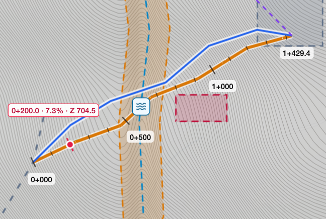
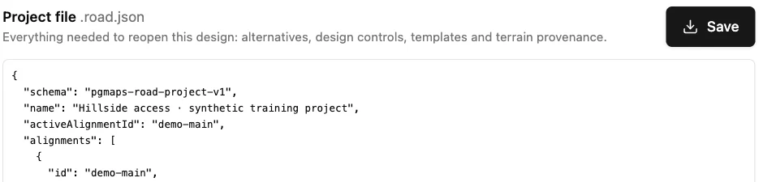

DDC Access · Lesson 1
Open Hillside access and choose a workspace
Open the training road, find a point 200 metres from its start, and try viewing it in two workspaces. Finish by saving a copy you can reopen.
-
Open the Hillside access training project
Open the Hillside access training project in a new tab. The link opens the PGMaps Engineering workbench. Keep this guide open alongside it.
-
Find the workspace switcher
Use Switch workspace interface to see the available layouts. The Engineering workbench shows the selected station on the map and road drawings. You can also choose Ribbon, Guided map or Dashboard.

-
Find the active road
Look for the Synthetic training badge in the header. The project is called Hillside access · synthetic training project. It contains two roads. Open the road selector beside the coloured dot and choose Hillside access if Contour alternative is showing.
-
Mark a station you can recognize
In the header’s screen preset menu, choose Linked overview. Below the drawing, enter 200 in the Station field and press Enter. Look for the red point labelled 0+200.0 on the plan. That is 200 metres along Hillside access, measured from the road’s start.

Plan view of the training road · Basemap © OpenStreetMap contributors, © CARTO -
Try another workspace
Select Workbench in the header, then choose Guided map. Find the Terrain, Alignment, and Checks steps. Check that the active road is still Hillside access and the station still reads 200. Use the workspace switcher again and return to Engineering workbench.
-
Save a copy and reopen it
A reload starts this training link fresh. To keep your design, choose Save in the Workbench header. In Save & export, select Project file, then choose Save beside the file preview. Your browser downloads a file ending in .road.json.

Close the export window. Choose Open in the header and select the file you just downloaded. Look for the Opened message with your filename and check that both roads are available in the road selector.